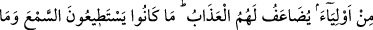
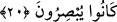

âhireti de inkâr ederler.
“Onlar ki Allah’ın yoluna” Allah’ın dinine ve ona tâat etme yoluna “engel olurlar.”
Meseleyi çarpıtıp çeşitli şüpheler uyandırmak suretiyle engel olabilecekleri herkese
engel olurlar. “ve onu eğriltmek isterler.” Yâni Allah’ın yolunu doğruluktan ve
gerçekten sapmış olmakla tavsif ederler. O zaman bu ifade, müsebbebe (o sebepten
kaynaklanan şeye) sebeb gibi isimlendirmek kabilinden olur.
el- İrşâd’da şöyle der: “Bu engel olma, onların Kur’an’ı yalanlamalarına ve “Kur’an
Allah tarafından (gönderilmiş) değildir.” şeklindeki sözlerine de şâmildir.”
“Ve onlar âhireti de inkâr ederler.” Yâni Allah’ın dininde bozukluk ararlar, kendileri
de ona inanmaz ve inkâr ederler. Âhiretin insanların gideceği başka bir doğru yolu
olduğunu iddia ederler.
“Onlar” zamirinin tekrarlanması, inkârlarını te’kid etmek ve küfrü onlara tahsis
etmek içindir. Sanki başkalarının inkârı onlarınki yanında hiç kalmaktadır.
20. Onlar yeryüzünde (Allah’ı) âciz bırakacak değillerdir ve onların Allah’tan
başka (yardım isteyecekleri) dostları da yoktur. Onlar için azap kat kat yapılır.
Çünkü
onlar
(gerçekleri)
işitmeye
tahammül
edemiyor
ve
(hakikati)
göremiyorlardı.
“Onlar” o yalancılar, eğer Allah Teâlâ kendilerini cezâlandırmayı istemesi
durumunda “yeryüzünde” bütün genişliğine rağmen kaçabilecekleri her yere kaçsalar
bile “Allah’ı” azâp etmekten “âciz bırakacak değillerdir ve onların Allah’tan başka”
kendilerine yardım edecek, başlarına gelecek azâbı engelleyecek “dostları da yoktur.”
Fakat “Onları biraz daha kendi hallerine bırak” (et-Târık, 86/17) âyetinde
buyrulduğu gibi verilen mühleti yerine getirmek için bu azap âhiret gününe bırakılmıştır.
“Onlar için azap kat kat yapılır.” Sanki: “Durumları bundan ibâret olan bu kişilerin
âkıbetleri ve hallerinin sonu ne olacaktır?” diye sorulmuş ve cevaben: “Onlara ebedî
azap kat kat yapılır.” denilmiştir. “Çünkü onlar” gerçeği kendilerine fayda verecek
biçimde “işitmeye tahammül edemiyor ve” hakkı, iç âlemlerinde (enfüste) ve dış
dünyada (âfâkta) sergilenen âyetleri “göremiyorlardı.”
Bu ifâde azâbın kat kat yapılmasının sebebini göstermek için gelmiştir. Azâbın kat kat
yapılması ile kasdedilen, azâbın tek bir mertebe artması değildir. Çünkü kat kat artış bir
çok mertebeler hâlinde artışı içermektedir. Sa‘dî Çelebi Hâşiyesi’nde böyle